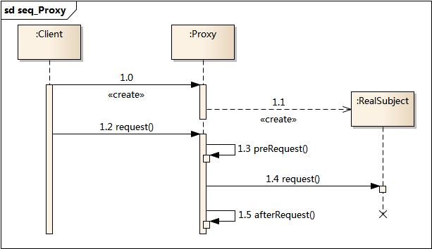

6. 代理模式¶
6.1. 模式动机¶
在某些情况下，一个客户不想或者不能直接引用一个对 象，此时可以通过一个称之为“代理”的第三者来实现 间接引用。代理对象可以在客户端和目标对象之间起到 中介的作用，并且可以通过代理对象去掉客户不能看到 的内容和服务或者添加客户需要的额外服务。
通过引入一个新的对象（如小图片和远程代理 对象）来实现对真实对象的操作或者将新的对 象作为真实对象的一个替身，这种实现机制即 为代理模式，通过引入代理对象来间接访问一 个对象，这就是代理模式的模式动机。
6.2. 模式定义¶
代理模式(Proxy Pattern) ：给某一个对象提供一个代 理，并由代理对象控制对原对象的引用。代理模式的英 文叫做Proxy或Surrogate，它是一种对象结构型模式。
6.3. 模式结构¶
代理模式包含如下角色：
Subject: 抽象主题角色
Proxy: 代理主题角色
RealSubject: 真实主题角色

6.4. 时序图¶
6.5. 代码分析¶
1#include <iostream>
2#include "RealSubject.h"
3#include "Proxy.h"
4
5using namespace std;
6
7int main(int argc, char *argv[])
8{
9 Proxy proxy;
10 proxy.request();
11
12 return 0;
13}
1///////////////////////////////////////////////////////////
2// Proxy.h
3// Implementation of the Class Proxy
4// Created on: 07-十月-2014 16:57:54
5// Original author: colin
6///////////////////////////////////////////////////////////
7
8#if !defined(EA_56011290_0413_40c6_9132_63EE89B023FD__INCLUDED_)
9#define EA_56011290_0413_40c6_9132_63EE89B023FD__INCLUDED_
10
11#include "RealSubject.h"
12#include "Subject.h"
13
14class Proxy : public Subject
15{
16
17public:
18 Proxy();
19 virtual ~Proxy();
20
21 void request();
22
23private:
24 void afterRequest();
25 void preRequest();
26 RealSubject *m_pRealSubject;
27
28};
29#endif // !defined(EA_56011290_0413_40c6_9132_63EE89B023FD__INCLUDED_)
1///////////////////////////////////////////////////////////
2// Proxy.cpp
3// Implementation of the Class Proxy
4// Created on: 07-十月-2014 16:57:54
5// Original author: colin
6///////////////////////////////////////////////////////////
7
8#include "Proxy.h"
9#include <iostream>
10using namespace std;
11
12
13Proxy::Proxy(){
14 //有人觉得 RealSubject对象的创建应该是在main中实现；我认为RealSubject应该
15 //对用户是透明的，用户所面对的接口都是通过代理的；这样才是真正的代理；
16 m_pRealSubject = new RealSubject();
17}
18
19Proxy::~Proxy(){
20 delete m_pRealSubject;
21}
22
23void Proxy::afterRequest(){
24 cout << "Proxy::afterRequest" << endl;
25}
26
27
28void Proxy::preRequest(){
29 cout << "Proxy::preRequest" << endl;
30}
31
32
33void Proxy::request(){
34 preRequest();
35 m_pRealSubject->request();
36 afterRequest();
37}
运行结果：

6.6. 模式分析¶
6.7. 实例¶
6.8. 优点¶
代理模式的优点
代理模式能够协调调用者和被调用者，在一定程度上降低了系 统的耦合度。
远程代理使得客户端可以访问在远程机器上的对象，远程机器 可能具有更好的计算性能与处理速度，可以快速响应并处理客户端请求。
虚拟代理通过使用一个小对象来代表一个大对象，可以减少系 统资源的消耗，对系统进行优化并提高运行速度。
保护代理可以控制对真实对象的使用权限。
6.9. 缺点¶
代理模式的缺点
由于在客户端和真实主题之间增加了代理对象，因此 有些类型的代理模式可能会造成请求的处理速度变慢。
实现代理模式需要额外的工作，有些代理模式的实现 非常复杂。
6.10. 适用环境¶
根据代理模式的使用目的，常见的代理模式有以下几种类型：
远程(Remote)代理：为一个位于不同的地址空间的对象提供一个本地 的代理对象，这个不同的地址空间可以是在同一台主机中，也可是在 另一台主机中，远程代理又叫做大使(Ambassador)。
虚拟(Virtual)代理：如果需要创建一个资源消耗较大的对象，先创建一个消耗相对较小的对象来表示，真实对象只在需要时才会被真正创建。
Copy-on-Write代理：它是虚拟代理的一种，把复制（克隆）操作延迟 到只有在客户端真正需要时才执行。一般来说，对象的深克隆是一个 开销较大的操作，Copy-on-Write代理可以让这个操作延迟，只有对象被用到的时候才被克隆。
保护(Protect or Access)代理：控制对一个对象的访问，可以给不同的用户提供不同级别的使用权限。
缓冲(Cache)代理：为某一个目标操作的结果提供临时的存储空间，以便多个客户端可以共享这些结果。
防火墙(Firewall)代理：保护目标不让恶意用户接近。
同步化(Synchronization)代理：使几个用户能够同时使用一个对象而没有冲突。
智能引用(Smart Reference)代理：当一个对象被引用时，提供一些额外的操作，如将此对象被调用的次数记录下来等。
6.11. 模式应用¶
EJB、Web Service等分布式技术都是代理模式的应用。在EJB中使用了RMI机制，远程服务器中的企业级Bean在本地有一个桩代理，客户端通过桩来调用远程对象中定义的方法，而无须直接与远程对象交互。在EJB的使用中需要提供一个公共的接口，客户端针对该接口进行编程，无须知道桩以及远程EJB的实现细节。
6.12. 模式扩展¶
几种常用的代理模式
图片代理：一个很常见的代理模式的应用实例就是对大图浏览的控制。
用户通过浏览器访问网页时先不加载真实的大图，而是通过代理对象的方法来进行处理，在代理对象的方法中，先使用一个线程向客户端浏览器加载一个小图片，然后在后台使用另一个线程来调用大图片的加载方法将大图片加载到客户端。当需要浏览大图片时，再将大图片在新网页中显示。如果用户在浏览大图时加载工作还没有完成，可以再启动一个线程来显示相应的提示信息。通过代理技术结合多线程编程将真实图片的加载放到后台来操作，不影响前台图片的浏览。
远程代理：远程代理可以将网络的细节隐藏起来，使得客户端不必考虑网络的存在。客户完全可以认为被代理的远程业务对象是局域的而不是远程的，而远程代理对象承担了大部分的网络通信工作。
虚拟代理：当一个对象的加载十分耗费资源的时候，虚拟代理的优势就非常明显地体现出来了。虚拟代理模式是一种内存节省技术，那些占用大量内存或处理复杂的对象将推迟到使用它的时候才创建。
-在应用程序启动的时候，可以用代理对象代替真实对象初始化，节省了内存的占用，并大大加速了系统的启动时间。
动态代理
动态代理是一种较为高级的代理模式，它的典型应用就是Spring AOP。
在传统的代理模式中，客户端通过Proxy调用RealSubject类的request()方法，同时还在代理类中封装了其他方法(如preRequest()和postRequest())，可以处理一些其他问题。
如果按照这种方法使用代理模式，那么真实主题角色必须是事先已经存在的，并将其作为代理对象的内部成员属性。如果一个真实主题角色必须对应一个代理主题角色，这将导致系统中的类个数急剧增加，因此需要想办法减少系统中类的个数，此外，如何在事先不知道真实主题角色的情况下使用代理主题角色，这都是动态代理需要解决的问题。
6.13. 总结¶
在代理模式中，要求给某一个对象提供一个代理，并由代理对象控制对原对象的引用。代理模式的英文叫做Proxy或Surrogate，它是一种对象结构型模式。 - 代理模式包含三个角色：抽象主题角色声明了真实主题和代理主题的共同接口；代理主题角色内部包含对真实主题的引用，从而可以在任何时候操作真实主题对象；真实主题角色定义了代理角色所代表的真实对象，在真实主题角色中实现了真实的业务操作，客户端可以通过代理主题角色间接调用真实主题角色中定义的方法。 - 代理模式的优点在于能够协调调用者和被调用者，在一定程度上降低了系统的耦合度；其缺点在于由于在客户端和真实主题之间增加了代理对象，因此有些类型的代理模式可能会造成请求的处理速度变慢，并且实现代理模式需要额外的工作，有些代理模式的实现非常复杂。远程代理为一个位于不同的地址空间的对象提供一个本地的代表对象，它使得客户端可以访问在远程机器上的对象，远程机器可能具有更好的计算性能与处理速度，可以快速响应并处理客户端请求。- 如果需要创建一个资源消耗较大的对象，先创建一个消耗相对较小的对象来表示，真实对象只在需要时才会被真正创建，这个小对象称为虚拟代理。虚拟代理通过使用一个小对象来代表一个大对象，可以减少系统资源的消耗，对系统进行优化并提高运行速度。 - 保护代理可以控制对一个对象的访问，可以给不同的用户提供不同级别的使用权限。